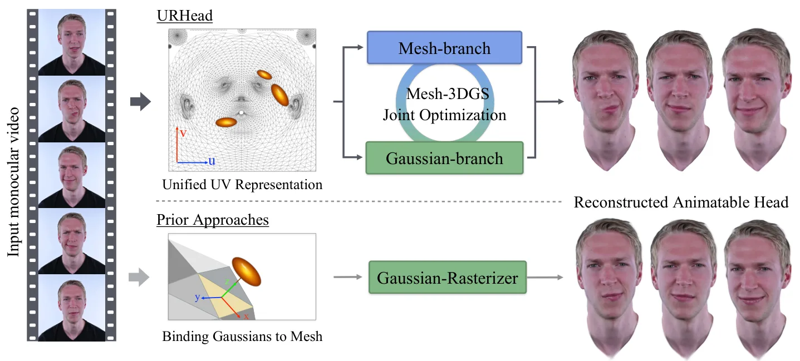
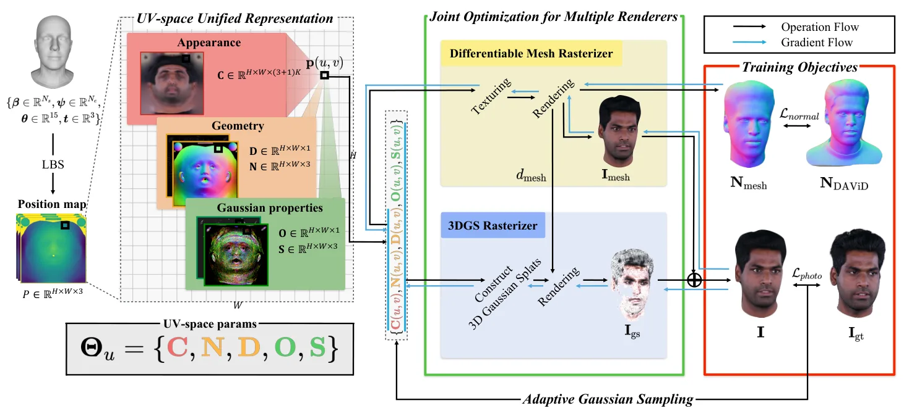
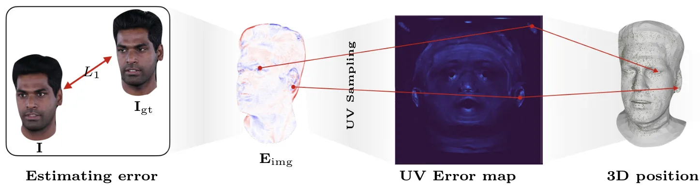

URHead：用于头部虚拟形象网格—3DGS 联合优化的统一 UV 空间表示URHead: A Unified UV-Space Representation for Joint Mesh-3DGS Optimization in Head Avatars
直接涉及 3DGS 与网格的联合三维重建，表示设计清晰；应用集中于头部虚拟形象，不涉及在线 SLAM 或通用场景定位。
一句话工作总结
用共享 UV 空间把可控网格与高保真 3DGS 真正绑定起来，重点价值在几何一致性、联合优化和可动画重建。
摘要
URHead 提出一种面向高保真、可动画头部虚拟形象的统一表示，使网格与 3D Gaussian Splatting 共享同一套 UV 参数化。网格负责精确几何控制，Gaussian 负责照片级细节；通过联合优化和自适应 Gaussian 采样，系统自动分配两类表示的职责，在保留完整参数化控制能力的同时维持个体细节。论文报告其重建质量和动画一致性优于现有方法。
We present URHead, a unified representation for high-fidelity and animatable head avatars that fundamentally redefines mesh-Gaussian integration. While mesh-based methods offer precise geometric control but lack photorealistic detail, and Gaussian-based approaches achieve photorealism but suffer from poor structural consistency, existing hybrid solutions fail to fully leverage their complementary strengths. Our key contribution is a UV-space unification where both representations share a common UV parameterization. Through joint optimization with adaptive gaussian sampling, our method automatically learns to disentangle and allocate appropriate roles to each component. URHead maintains full parametric controllability while preserving subject-specific details, and outperforms existing state-of-the-art methods in reconstruction quality and animation consistency.
中文解读摘录
- 原题：URHead: A Unified UV-Space Representation for Joint Mesh-3DGS Optimization in Head Avatars
- 作者：Seonghak Lee, Junhee Cho, Jisoo Park, Min-Gyu Park, Jongmin Lee, Ju Hong Yoon, Junseok Kwon
- 推荐评分：8.0/10
- 核心方法：让网格与 3D Gaussian Splatting 共享 UV 参数化，通过联合优化和自适应 Gaussian 采样，自动分配可控几何与照片级细节的表达职责。
- 为何值得看：直接回应 hybrid mesh–3DGS 中结构一致性与可控性难兼得的问题；重点核查 UV 拓扑限制、遮挡区域稳定性以及能否推广到通用动态对象。
图表/页面预览
{kind=link}

{kind=link}

{kind=link}
